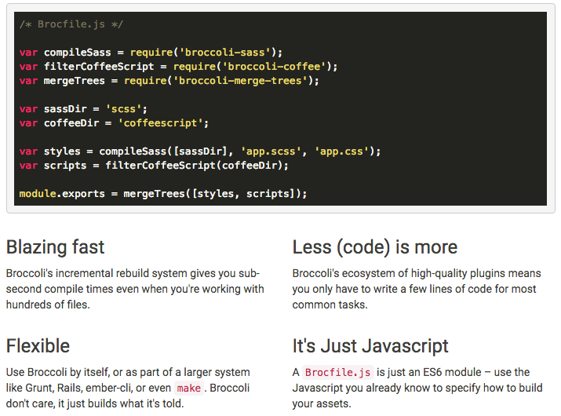

Broccoli.js
Broccoli.js is another task runner that comes inside Ember.js 2.x bundle, with ember-cli (Ember Command Line Interface). This is a flexible platform, because it allows the developer to use it alone, or as part of a larger system like Grunt, Rails, or even make. Broccoli just builds what it is told, it does not care about the tools around it.
Just like we've seen before on the Gulp.js module, you also have that Javascript environment inside the Brocfile.js so you can declare variables, require modules and all that.
Broccoli.js may use your project tree folder structure in order to perform its tasks. This tree concept is particular from this tool and it's worth talking about.
A Brocfile.js file in the project root contains the build specification. It should export a tree. A tree can be any string representing a directory path, like app or src. Or a tree can be an object conforming to the Plugin API Specification. A Brocfile.js will usually directly work with only directory paths, and then use plugins to generate transformed trees.
module.exports = 'app'
With that Brocfile, the build result would equal the contents of the app tree in your project folder. The command would be broccoli build {{filename}}.
Broccoli seems to be a better version of Gulp when it comes to compactness and faster rebuild times but it is severely lacking in documentation which turned me away from it. You also need to create a separate "public" folder where the trees will be outputted, I personally don’t like that. Other tools that may behave just like a good task automator to be embedded in a project:
Project Scaffolding
What is Scaffolding?
We have several definitions for scaffolding, but for us scaffolding will mean the first folder structure defined for a project. It can follow any kind of standard or pattern that best fits the project's needs.
The most annoying phase of a development cycle is setting up because the developer does the exact same thing - with few differences - from previous projects.
There are many tools we can use to leverage this advantage of time in our development structure bootstrap. We are going to focus mainly into two tools: Yeoman and Slush.
Yeoman
Yeoman helps to kickstart new projects, prescribing best practices and tools to stay productive. Basically,
it provides a generator ecosystem. A generator is basically a plugin that can be run with the yo command
to scaffold complete projects or useful parts.
Yeoman is also concerned about the headaches developers face when having to do a manual setup. Through our official Generators, the "Yeoman workflow" is promoted. This workflow is a robust and opinionated client-side stack, comprising tools and frameworks that can help developers quickly build beautiful web applications.
Yeoman includes support for linting, testing, minification and much more, so developers can focus on solutions rather than worrying about the little things. This is a great way to get started in the front-end development world.
yo is the Yeoman command line utility allowing the creation of projects utilizing scaffolding templates (referred
to as generators). Yo and the generators used are installed using npm.
npm install -g yo
A common Yeoman generator might have the syntax generator-XYZ, where XYZ is replaced by the name of the
generator, such as angular, backbone, amongst others. For instance, let's say we want to install
generator-angular. The command would be:
npm install -g generator-angular
yo angular
After this, you will see a bunch of questions about which techniques you would like to include in your project:
- HTML: Any preprocessors, like Jade? Or would you rather go with plain and raw HTML?
- CSS: Use Sass, LESS or even Stylus? You can always choose the hard way of typing plain CSS.
- JS: CoffeeScript might help, or JS raw and simple.
Troubleshooting
Most issues can be found by running:
yo doctor
The doctor command will diagnose and provide steps to resolve the most common issues. If you have ever used
brew install, you might remember the doctor parameter from there.
Slush
We've seen how Gulp.js works as a task runner, or as they describe themselves, a streaming build system. To use Gulp as a generator, you will have to specify the directory manually with some other required configurations and that is where Slush comes in.
Slush serves the purpose of centralizing generators. Slush does not offer any standalone service but depends on Gulp.
"Also remember that Slush comes with no functionality of its own, the only thing it provides is a convention and convenience of running global gulpfiles (in this case slushfiles) with the purpose of scaffolding projects, or anything else useful for that matter. So if something is missing it should probably be implemented as a gulp plugin." – Joakim Carlstein
Slush basically runs the gulp module for every generator thereby producing a template as the slushfile specifies. Amongst the most popular generators are slush-angular and slush-phonegap.
npm install -g slush gulp bower
npm install -g slush-angular
slush angular
From this point on, Slush will prompt an interactive process that will allow us to choose our own preferences. Just like we saw Yeoman doing! The upside is that Gulp is ready to serve at port 3000, by running: gulp serve.
Common dependencies
NPM
We referred to the Node Package Manager everytime we wanted to install a dependency or a plugin to make our tasks work in the last few days. Let's check out a sample of our package.json file. It is written using JSON annotation. It has all kind of application's info, from the application's name, its version, quick description to the dependencies.
{ "name": "test", "version": "1.0.0", "description": "", "main": "gulpfile.js", "scripts": { "test": "echo \"Error: no test specified\" && exit 1" }, "author": "", "license": "ISC", "devDependencies": { "del": "^2.2.0", "gulp": "^3.9.1", "gulp-concat": "^2.6.0", "gulp-jshint": "^2.0.1", "gulp-uglify": "^1.5.3", "gulp-util": "^3.0.7", "jshint": "^2.9.2", "jshint-stylish": "^2.2.0" } }
You can find the whole package.json documentation here. It explains all the possible attributes and what you can do with each one of them.
From our devDependencies block, we can see that we can control which version to be installed. Take this line for instance: "gulp-jshint": "^2.0.1". Obviously this is the version that we want to use. But what is this symbol that comes after the version number? That is another type of annotation. We can actually define if we want an exact version, any version above and etc. Here is a list about what we can do:
- ">"
- ">="
- "<"
- "<="
- "~"
- "^": compatible version
- and many others...
The list goes on! We can see the full list and its meaning in the same link for the package.json documentation, or directly to semver. So you can pretty much control every aspect of you packages. Therefore, to add any new package to you project you can just edit this file and add anything that you'd like and add any version that works for you.
I'm no task runner material, what is my alternative?
So you don't like any tool I talk about? What if I told you that there is a tool which can run build scripts, carry configuration values, is streaming, has an incredibly simple API, and comes free with every Node.js installation? npm.
npm's scripts object lives inside package.json, meaning there is no new files to add to your project. The object has properties, which are the task names, and values which are the commands. It is so unbelievably simple that it baffles me why we ever needed other build tools in the first place. Let's take a JSHint example and port it to NPM:
"devDependencies": { "jshint": "latest", }, "scripts": { "lint": "jshint **.js" }
That's it! You introduce 1 extra dependency, and 1 line of code, per tool you wish to use. Then just call npm run lint and voila! A bad result will provide a non-zero exit code, and the results that come out are streamable!
If you are interested in having a deeper vision on this topic, I recommend this article.
Bower
Self-titled as a package manager for the web, Bower is a good solution for separating front-end dependencies from other scope related packages. npm can handle every kind of package, may it be about server-side, node task related, database or front-end. In a web development context, Bower is supposed to make control just the UI part, keeping packages such as jQuery consistent to what the application asks for.
Bower can manage components that contain HTML, CSS, JavaScript, fonts or even image files. Bower doesn’t concatenate or minify code or do anything else - it just installs the right versions of the packages you need and their dependencies.
npm install -g bower
bower init
bower.json
We may want to append libraries, say jQuery, to our bower.json file. We do it similar to what we've been doing since the first tool explanation, only that now we are using bower command to do the trick.
bower install jquery --save
Bower can be configured using JSON in a .bowerrc file. Look into Docs reference for more options. An example of this configuration is:
{ "directory": "app/components/", "timeout": 120000, "registry": { "search": [ "http://localhost:8000", "https://bower.herokuapp.com" ] } }
One final tip is to not include the bower_components/ folder into your versioning control system. You can always rebuild this folder by using bower install.